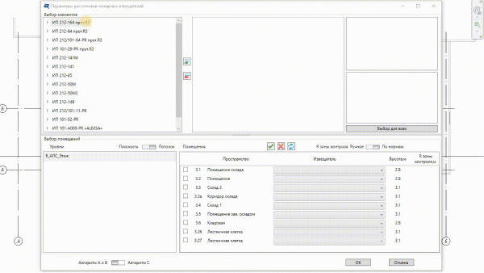
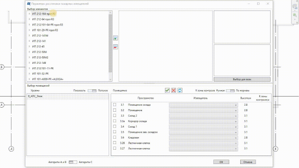

R-BIM - это бесплатный плагин для Autodesk Revit, предназначенный для автоматизации рутинных процессов проектирования слаботочных систем:
1. Автоматическая расстановка пожарных извещателей
После выбора помещений, в которых необходимо установить пожарные извещатели, R-BIM производит анализ формы и габаритов помещений и расставляет пожарные извещатели по требованиям СП484.1311500.2020 (возможно применение и для СП5.13130.2009), соблюдая нормативные отступы от светильников и вентиляционных решеток.
2. Автоматическая адресация
Более подробно познакомиться с возможностями R-BIM можно в следующем видео: